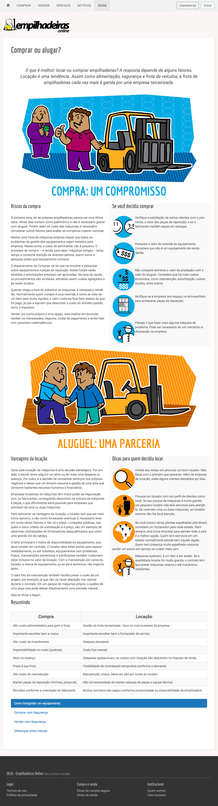

Empilhadeiras online: "Comprar ou alugar?"
Trabalho para o site Empilhadeiras online. A partir das informações fornecidas, editei o texto fornecido pelo cliente para comparar as vantagens e desvantagens de comprar e/ou alugar equipamentos. A edição foi feita já considerando recursos visuais como ícones e textos corridos. Complementei com ilustrações, e forneci o material em formato HTML adaptado para ser inserido no CMS usado no site. Simples, porém eficiente.
